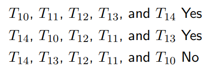
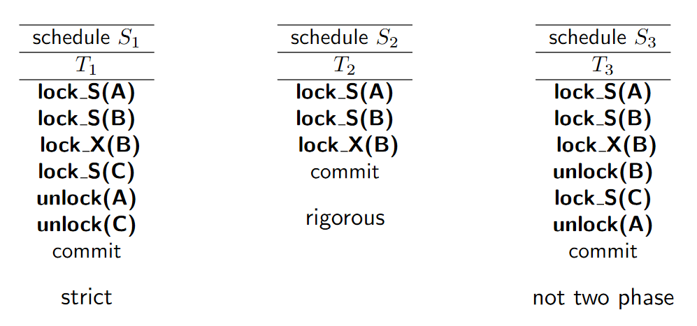
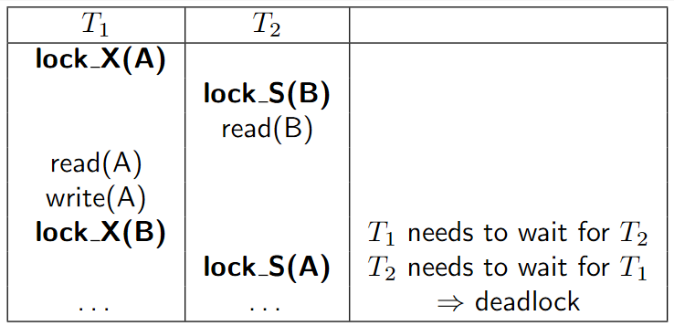

Transactions¶
Learning Goals
- Understanding the transaction concept
- Understanding the ACID properties
- Understanding the schedule concept
- Understanding serializability
- Understanding recoverable and cascadeless schedules
Concurrency Control
- Understand and use lock-based concurrency control
- Understand and use two-phase locking
Recovery
- Understanding basic logging algorithms
- Understanding the importance of atomicity and durability
Transactions¶
A transaction is a collection of operations that forms a logical unit of work, during which various data items are accessed and possibly updated.
Transaction boundaries are user-defined!
ACID Properties¶
Atomicity
- Either all operations of the transaction are properly reflected in the database or none are.
- Often implemented via logs
Consistency
- Execution of a transaction in isolation preserves the consistency of the database.
- According to constraints, checks, assertions
- In addition, consistency is defined by the application, e.g., fund transfers should not generate or destroy money – the overall sum is the same before and afterwards
Isolation
- Each transaction appears to have the DB exclusively on its own.
- Intermediate results must be hidden for other transactions.
- Often implemented via locks
Durability
- Updates of successfully completed transactions must not get lost despite system failures
- Often implemented via logs
Operations on Transactions¶
BEGIN- Starts a transaction
COMMIT- Ends a transaction
ROLLBACK- All changes are undone/discarded
SAVEPOINT
SAVEPOINT <savepoint_name>;- Defines a point/state within a transaction
- A transaction can be rolled back partially back up to the savepoint
ROLLBACK TO <savepoint_name>- Rolls the active transaction back to the savepoint
<savepoint_name>
- Rolls the active transaction back to the savepoint
Transaction States¶
How do DBMSs Support Transactions?¶
The two most important components of transaction management are:
Multi-user Synchronization (isolation)
- Semantic correctness despite concurrency Concurrency allows for high throughput
- Serializability
- Weaker isolation levels
Recovery (atomicity and durability)
- Roll back partially executed transactions
- Re-executing transactions after failures
- Guaranteeing persistence of transactional updates
Schedules and Serializability¶
Concurrency¶
Affects the I in ACID
Problems
- Lost Updates
- Overwriting updates
- Dirty Read
- Dependency on non-committed updates
- Non-repeatable Read
- Dependency on other updates
- T2 loses the illusion that it is alone in the database
- Phantom Problem
- Dependency on new/deleted tuples
Schedules¶
A schedule is a sequence of operations from one ore more transactions. For concurrent transactions, the operations are interleaved.
Operations
read(Q,q)- Read the value of database item Q and store it in the local variable q.
write(Q,q)- Store the value of the local variable q in the database item Q
- Arithmetic operations
commitabort
Serial Schedule The operations of the transactions are executed sequentially with no overlap in time
Concurrent Schedule The operations of the transactions are executed with overlap in time
Valid Schedule A schedule is valid if the result of its executions is "correct"
Example Schedules¶
Correctness¶
Definition 1 (D1) A concurrent execution of transactions must leave the database in a consistent state
Definition 2 (D2) Concurrent execution of transactions must be (result) equivalent to some serial execution of the transactions
- We use Definition 2
Simplifying assumptions
- Only reads and writes are used to determine correctness
- This assumption is stronger than definition D2, as even fewer schedules are considered correct.
Conflicts¶
Definition 4 (D4)[^1]
A schedule is conflict serializable if it is conflict equivalent to a serial schedule
- It ensures that after execution the database is in a consistent state.
[^1]: Third definition D3 is view serializability, and is not covered in the course
Alternative Definition from Web
A schedule is called conflict serializable if it can be transformed into a serial schedule by swapping non-conflicting operations.
There is a conflict if there is a read and a write on the same data unit. Also if there is a write on the same data unit.
Let I and J be consecutive instructions of a schedule S of multiple transactions
-
If I and J do not conflict, we can swap their order to produce a new schedule S'
-
The instructions appear in the same order in S and S', except for I and J, whose order does not matter
-
S and S' are termed conflict equivalent schedules
Examples¶

Conflict Graph¶
AKA Precedence graph
Directed graph
Assumption:
- A transaction will always read an item before it writes that item
Given a schedule for a set of transactions T_1,T_2,\dots,T_n
- The vertices of the conflict graph are the transactions identifiers
- An edge from T_i to T_j denotes that the two transactions are conflicting, with T_i making the relevant access earlier
- Sometimes the edge is labeled with the item involved in the conflict
Draw a Conflict Graph¶
- For each transaction T_x participating in schedule S, create a node labeled T_i in the precedence graph.
- For each case in S where T_j executes a
read(X)after T_i executes awrite(X), create an edge (T_i \to T_j) in the precedence graph. - For each case in S where T_j executes a
write(X)after T_i executes aread(X), create an edge (T_i \to T_j) in the precedence graph. - For each case in S where T_j executes a
write(X)after T_i executes awrite(X), create an edge (T_i \to T_j) in the precedence graph.
Determining Serializability¶
Given a schedule S and a conflict graph
- A schedule is conflict serializable if its conflict graph is acyclic (no cycles)
- Intuitively, a conflict between two transactions forces an execution order between them (topological sorting)
Example¶
Which of the following are conflict serial schedules?

Relationship Among Schedules¶
Recoverable and Cascadeless Schedules¶
Transactions can fail!
-
If T_i fails, it must be rolled back to retain the atomicity property of transactions
-
If another transaction T_j has read a data item written by T_i, then T_j must also be rolled back
\Rightarrow database systems must ensure that schedules are recoverable
This schedule is not recoverable:
Recoverable¶
A schedule is recoverable if for each pair of transactions T_i and T_j where T_j reads data items written by T_i, then T_i must commit before T_j commits.
Cascadeless¶
A schedule is cascadeless if for each pair of transactions T_i and T_j, where T_j reads data items written by T_i, the commit operation of T_i must appear before the read by T_j
- In other words, if you only read committed data
- Every cascadeless schedule is also recoverable.
Cascading rollbacks can easily become expensive.
It is desirable to restrict the schedules to those that are cascadeless.
Concurrency Control¶
Scheduler¶
Task of the scheduler:
- produce serializable schedules of instructions (transactions T_1, \dots, T_n) that avoid cascading rollbacks
Realized by synchronization strategies
- pessimistic
- lock-based synchronization
- timestamp-based synchronization
- optimistic
Lock-based Synchronization¶
Ensuring (conflict) serializable schedules by delaying transactions that could violate serializability.
Two types of locks can be held on a data item Q
- S (shared, read lock)
- X (exclusive, write lock)
Operations on locks:
lock_S(Q)- set shared lock on data item Q
lock_X(Q)- set exclusive lock on data item Q
unlock(Q)- release lock on data item Q
Lock Privileges¶
A transaction holding
- an exclusive lock may issue a write or read access request on the item
- a shared lock may issue a read access request on the item
Compatibility Matrix
NL - no lock
- Concurrent transactions can only be granted compatible locks
- A transaction might have to wait until a requested lock can be granted!
Problems with Early Unlocking¶
Early unlocking can cause incorrect results (non-serializable schedules) but allows for a higher degree of concurrency.
- Initially A = 100 and B = 200
- serial schedule T_{15};T_{16} prints 300
- serial schedule T_{16};T_{15} prints 300
- S_7 prints 250
Problems with Late Unlocking¶
Late unlocking avoids non-serializable schedules. But it increases the chances of deadlocks.
Learn to live with it!
Two-Phase Locking (2PL)¶
Is a protocol
- First phase (growing phase):
- Transactions may request locks
- Transactions may not release locks
- Second phase (shrinking phase):
- Transactions may not request locks
- Transactions may release locks
When the first lock is release, the we move from first to second phase.
Examples¶
Remember that we look at transactions indi
Characteristics of 2PL¶
- Produces only serializable schedules
- Insures conflict serializability
- Produces a subset of all possible serializable schedules
- Does not prevent deadlocks
- Does not prevent cascading rollbacks
- "Dirty" reads are possible (reading from non-committed transactions)
Variations of 2PL¶
Strict 2PL
- Exclusive locks are not released before the transaction commits
- Prevents "dirty reads"
Rigorous 2PL
- All locks are released after commit time
- Transactions can be serialized in the order they commit
Advantage
- No cascading rollbacks
Disadvantage
- Loss of potential concurrency
Lock Conversion¶
Goal: apply 2PL but allow for a higher degree of concurrency
First phase
- Acquire an S-lock on a data item
- Acquire an X-lock on a data item
- Convert (upgrade) an S-lock to an X-lock
Second phase
- Release S-, and X-locks
- Convert (downgrade) an X-lock to an S-lock
This protocol still ensures serializability. It relies on the application programmer to insert the appropriate locks.
More Examples¶

Overview¶
Deadlocks¶

Solutions
- detection and recovery
- prevention
- timeout (not covered in presentation)
Deadlock Detection¶
Create a "Wait-for graph" and check for cycles
- One node for each active transaction T_i
- Edge T_i\to T_j if T_i waits for the release of locks by T_j
A deadlock exists if the wait-for graph has a cycle
If a deadlock is detected:
- Select an appropriate victim
- Abort the victim and release its locks
Example¶
Rollback Candidates¶
Choosing a good victim transaction
Rollback of one or more transactions that are involved in the cycle
- The latest (minimization of rollback effort)
- The one holding the most locks (maximization of released resources)
Prevent that always the same victim is chosen (starvation)
- "rollback counter"
- if above a certain threshold: no more rollbacks to break deadlocks
Deadlock Prevention¶
Conservative 2PL
- 2PL as well as strict and rigorous 2PL do not prevent deadlocks
- Additional requirement:
- All locks (shared and exclusive) are obtained right in the beginning of a transaction
Summary: Concurrency Control¶
- Many concurrency control protocols have been developed
- Main goal: allowing only serializable, recoverable and cascadeless schedules
- Two-phase locking (2PL)
- Most relational DBMS's use rigorous two-phase locking
- Deadlock detection (wait-for graph) and prevention (conservative 2PL)
- Serializability vs. concurrency
Recovery¶
"Problems" with transactions
- Atomicity
- Transactions may abort (rollback)
- Durability
- What if a DBMS crashes?
The role of the recovery component is to ensure atomicity and durability of transactions in the presence of system failures.
Durability¶
How can durability be guaranteed (DBS6 Slides p. 159)
Durability is relative and depends on the number of copies and the geographical location
Guarantees only possible if
- we first update the copies and
- notify the user afterwards that a transaction's commit was successful
We hence assume that the WAL (Write Ahead Logging) rule is satisfied
Variations of applying the WAL rule:
- Log-based recovery
- Full redundancy: mirroring/shadowing all data on multiple computers (disks, computing centers) that redundantly do the same
- Not covered in course
Failure Classification¶
Transaction failure (failure of a not yet committed transaction)
- Undo the changes of the transaction
System crash (failure with main memory loss)
- Changes of committed transactions must be preserved
- Changes of all non-committed transactions need to be undone
Disk failure (failure with hard disk loss)
- Recovery based on archives/dumps
Data Storage¶
Two-level storage hierarchy
Data is organized in pages and blocks
- Volatile storage (main memory buffer)
- Non-volatile storage (hard disk)
- Stable storage (RAIDS, remote backups, ... )
- not covered in course
Movement of Values¶
Storage Operations¶
Transactions access and update the database
- Operations for moving blocks with data items between disk and main memory (system buffer)
- Input(Q)
- Transfer block containing data item Q to main memory
- Output(Q)
- Transfer block containing Q to disk and replace
- Input(Q)
- Operations for moving values between data items and application variables
- read(Q,q)
- Assign the value of data item Q to variable q
- write(Q,q)
- Assign the value of variable q to data item Q
- read(Q,q)
Logging¶
WAL (Write Ahead Logging)
- Before a transaction enters the commit state, “all its” log entries have to be written to stable storage, including the commit log entry
- Before a modified page (or block) in main memory can be written to the database (non-volatile storage), “all its” log entries have to be written to stable storage
During normal operation
-
When starting, a transaction T registers itself in the log: [T start]
-
When modifying data item X by write(X,x)
- Add log entry with
- [T, X, V-old, V-new]
- T: transaction's ID
- X: data item name
- old value of item
- new value of item
- [T, X, V-old, V-new]
- Write the new value of X
The buffer manager asynchronously outputs the value to disk later
- Add log entry with
-
When finishing, a transaction T appends [T commit] to the log, T then commits
The transaction commits precisely when the commit entry (after all previous entries for this transaction) is output to the log!
Log Entries¶
Structure of a log entry (log record)
[TID. DID. old, new]TID- identifier of the transaction that caused the update
DID- data item identifier location on disk (page, block, offset)
old- value of the data item before the update
new- value of the data item after the update
Additional entries
start[TID start]- Transaction TID has started
commit[TID commit]- Transaction TID has committed
abort[TID abort]- Transaction TID has aborted
Example¶
Log-based Recovery¶
Operations to recover from failures
- Redo: perform the changes to the database again
- Undo: restore database to state prior to execution
Recovery Algorithm¶
To recover from a failure
- Reproduce (redo) results for committed transactions
- Undo changes of transactions that did not commit
Remarks
- In a multitasking system, more than one transaction may need to be undone.
- If a system crashes during the recovery stage, the new recovery must still give correct results (idempotence).
Phases of Recovery¶
- Redo (repeat history)
- Forward scan through the log
- Repeat all updates in the same order as in the log file
- Determine "undo" transactions
- [T_i start] add T_i to the "undo list"
- [T_i abort] or [T_i commit] remove T_i from the "undo list"
- Undo (rollback) all transactions in the "undo list"
- Backwards scan through the log
- Undo all updates of transactions in the "undo list"
- create a compensating log record
- For a [T_i start] record of a transaction T_i in the "undo list", add a [T_i abort] record to the log file, remove T_i from the "undo list"
- Stop when "undo list" is empty
Compensating Log Records¶
[TID, DID, value]
- Created to undo (compensate) the changes of
[TID, DID, value, newValue] - Redo-only log record
- Can also be used to rollback a transaction during normal o
Example¶
Example can be seen in slides: DBS6 - Transactions - Slide 85 - p. 202